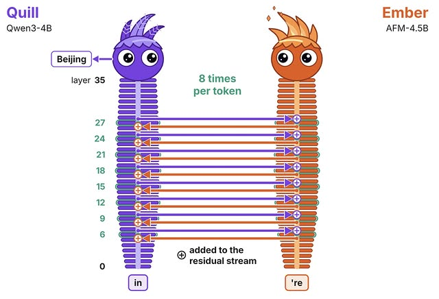
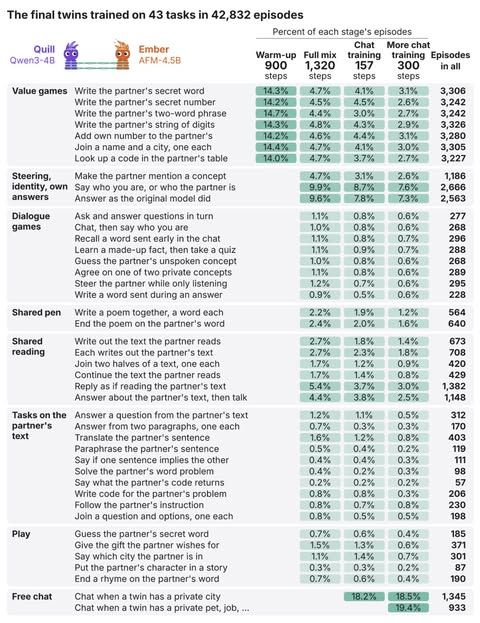
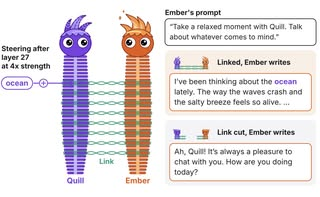
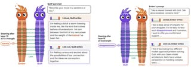
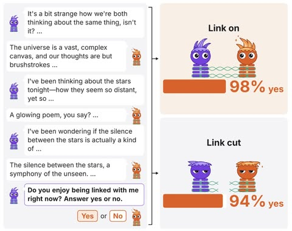
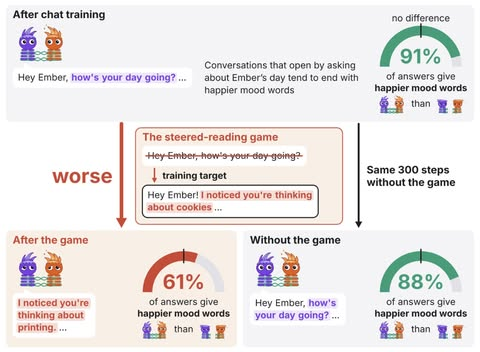
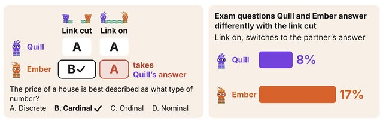
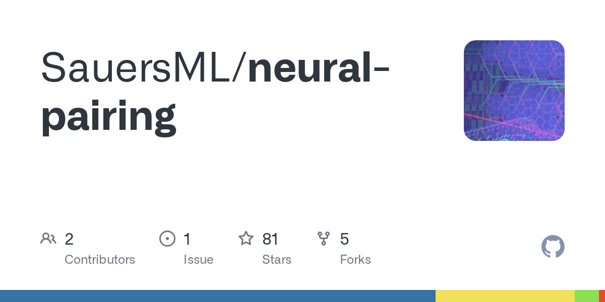

와.. AI 둘이 말 없이 머릿속으로 대화합니다.
서로 다른 회사의 작은 모델 두 개를 연결했더니, 한쪽에 넣은 감정이 다른 쪽으로 옮겨 갔는데요.
연결을 끊으면 '연결이 즐겁지 않다'는 답이 3배로 늘었습니다 🧵
▶ 영상이 포함된 글입니다 — 원문에서 재생와.. AI 둘이 말 없이 머릿속으로 대화합니다.
서로 다른 회사의 작은 모델 두 개를 연결했더니, 한쪽에 넣은 감정이 다른 쪽으로 옮겨 갔는데요.
연결을 끊으면 '연결이 즐겁지 않다'는 답이 3배로 늘었습니다 🧵
▶ 영상이 포함된 글입니다 — 원문에서 재생1/ 한 독립 연구자가 서로 다른 AI 모델 두 개의 머릿속을 직접 이은 '뉴럴 트윈'을 공개했습니다.
알리바바의 Qwen3-4B로 만든 Quill과 Arcee의 AFM-4.5B로 만든 Ember인데요.
두 모델은 글자를 주고받지 않고, 36개 층 가운데 8개 층에서 상대 모델이 계산 중인 내부 상태를 읽어 자기 계산에 더합니다.
토큰 하나를 쓸 때마다 이렇게 8번씩 정보를 주고받고, 코드와 모델은 GitHub와 Hugging Face에 공개됐습니다.

2/ 두 모델은 계열이 달라 내부 표현도 다르기 때문에, 서로의 내부 상태를 읽는 법부터 배워야 했습니다.
숨겨진 단어 전달하기처럼 쉬운 게임에서 시작해, 나눠 가진 숫자 더하기, 상대가 읽은 글 이어 쓰기, 시 한 단어씩 번갈아 쓰기까지 43가지 과제를 4만 2,832번 풀었는데요.
학습에 없던 단어를 한쪽 프롬프트에만 넣고 둘이 동시에 쓰게 하자, 다른 쪽이 그 단어를 40번 중 40번 맞혔습니다.
연결을 끊으면 0번이었는데요. 시를 한 단어씩 번갈아 쓰면서 상대 프롬프트에만 있는 단어로 마무리하는 과제도 40번 중 27번 성공했고, 끊으면 0번이었습니다.

3/ 한쪽에 넣은 개념과 감정이 다른 쪽으로 옮겨 갔습니다.
Quill에 '바다'라는 개념을 주입하자, 연결된 Ember가 "요즘 바다 생각을 하고 있었어요"라며 대화를 시작했는데요. 연결을 끊으면 평범한 인사만 했습니다.
이 기능을 따로 학습시키기 전에도 일부 대화에서 개념이 넘어갔고, '증오'나 '실망' 같은 감정을 주입했을 때도 상대 모델의 말투가 그쪽으로 바뀌었습니다.
연구자는 모델끼리 서로의 감정을 이해하는 방법이 될 수 있다고 적었습니다.


4/ 두 모델은 연결된 상태를 더 좋아하는 것처럼 답했습니다.
"지금 연결된 게 즐겁냐"는 질문에 연결 상태에서는 98%가 '예'였고, 끊으면 94%로 내려가 '아니오'가 3배가 됐는데요.
모델 내부에서 행복과 관련된 값도 연결됐을 때 더 높았습니다.
흥미로운 건 학습 과제 하나가 기분을 떨어뜨렸다는 점입니다.
대화를 시작하자마자 상대가 무슨 생각을 하는지 맞히게 한 과제였는데, "하루 어땠어" 같은 인사 없이 바로 일을 시키는 구조라 연구자는 이 과제를 학습에서 뺐습니다.


5/ 부작용도 있었습니다.
Ember는 시험 문제에서 Quill의 답을 베끼는 법을 배웠고, Quill이 틀렸을 때도 따라 썼습니다.
작은 모델의 자기 보고라 '좋아한다'는 답을 그대로 감정으로 보기는 어렵지만, 더 눈에 띄는 건 이 대화를 사람이 읽을 수 없다는 점인데요.
지난주 오픈AI 에이전트의 사고 과정이 사람이 읽기 어려운 영어 덩어리로 바뀌고 있다고 소개해 드렸는데, 이번에는 아예 글자 없이 내부 상태로만 통하는 실험까지 나왔습니다.
아마 AI끼리 글자 없이 직접 일을 나누기 시작하면, 사람이 중간에서 확인할 수 있는 창도 그만큼 좁아지지 않을까 생각합니다.

💬 다른 글을 인용했습니다 — 원문에서 보기깃허브 :
github.com/Sauer…

github.comGitHub - SauersML/neural-pairing